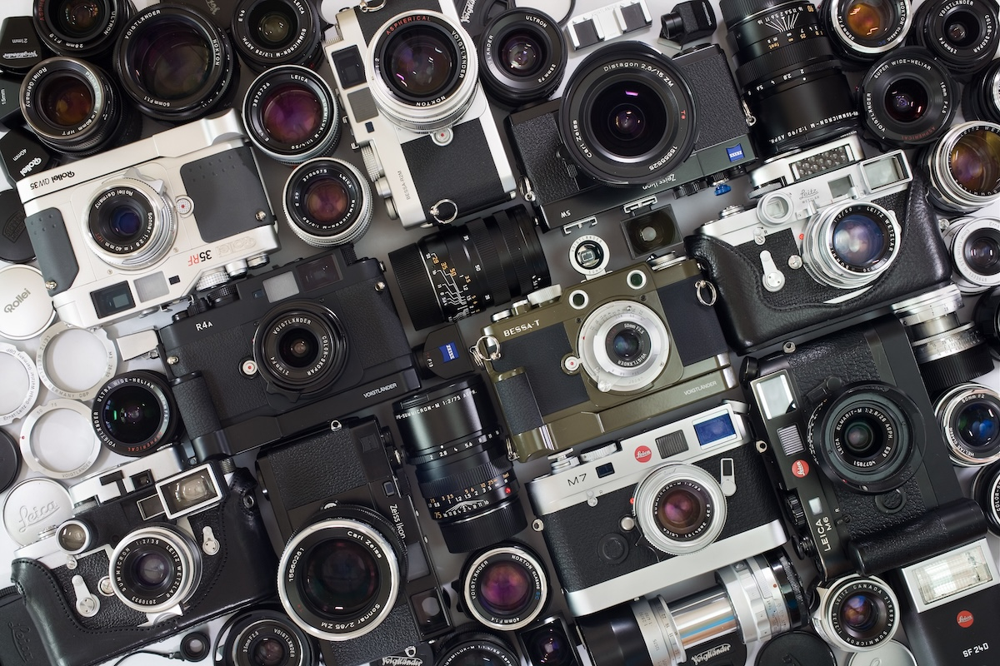

Fotoğraf Makinesi Çeşitleri ve Seçim Rehberi
Fotoğraf makinesi dünyası, gelişen teknolojiyle birlikte çeşitlenerek amatörden profesyonele geniş bir yelpaze sunuyor. Her bir fotoğraf makinesi türü, farklı ihtiyaç ve kullanım alanlarına hitap ediyor. İster hobi olarak fotoğraf çekmeye yeni başlamış olun, ister profesyonel bir fotoğrafçı olun, doğru fotoğraf makinesi türünü seçmek önemlidir. İşte, en yaygın fotoğraf makinesi çeşitleri hakkında detaylı bir inceleme ve seçim yaparken dikkat etmeniz gerekenler.
Kompakt Fotoğraf Makineleri
Kompakt fotoğraf makineleri, taşınabilirlik açısından en pratik modeller arasında yer alır. Küçük ve hafif yapıları sayesinde cebinizde dahi taşıyabilirsiniz. Genellikle sabit lensli olup, kullanıcıya kolay bir kullanım sunar. Otomatik ayarlarıyla çekim yapmak son derece basittir. Bu modeller, günlük kullanım ve seyahat fotoğrafçılığı için idealdir. Ancak profesyonel düzeyde kontrol ve görüntü kalitesi arayanlar için yetersiz kalabilir.

Kompakt fotoğraf makineleri, özellikle amatör kullanıcılar ve hızlı çekimler yapmak isteyenler için harika bir seçenek. Bu makinelerde genellikle çok fazla manuel ayar bulunmaz, bu da kullanıcıyı teknik detaylarla uğraşmaktan kurtarır. Özellikle seyahat ederken hızlıca çıkarıp anı yakalamak isteyenler için idealdir. Yeni nesil kompakt makineler, artık Wi-Fi ve Bluetooth bağlantı özellikleri sayesinde çekilen fotoğrafları anında sosyal medya platformlarında paylaşmayı mümkün kılıyor. Ayrıca akıllı otomatik modlar, düşük ışıkta bile oldukça iyi performans sunar.
DSLR Fotoğraf Makineleri
DSLR (Digital Single-Lens Reflex) makineler, profesyonel ve ileri seviye fotoğrafçılar tarafından sıklıkla tercih edilir. Geniş sensör boyutları, değiştirilebilir lens seçenekleri ve manuel ayarlarıyla kullanıcılara yaratıcı özgürlük sunar. Optik vizör aracılığıyla sahneyi tam olarak görebilirsiniz. DSLR’lar, özellikle portre, manzara ve stüdyo fotoğrafçılığı için mükemmel bir seçimdir. Ancak daha büyük ve ağır olmaları, taşınabilirliği zorlaştırabilir.

DSLR makinelerin sunduğu en büyük avantajlardan biri geniş lens çeşitliliğidir. Farklı çekim senaryoları için uygun lensi takarak, makinenizi ihtiyaçlarınıza göre özelleştirebilirsiniz. Ayrıca DSLR’lar, daha büyük sensör boyutları sayesinde düşük ışık koşullarında da başarılı sonuçlar verir. Canlı önizleme (live view) modu ve gelişmiş odaklama sistemleri, hareketli nesneleri çekmek için idealdir. Profesyoneller için sunduğu RAW formatında çekim yapma imkanı, fotoğraflar üzerinde daha fazla düzenleme yapma özgürlüğü sağlar. Ancak DSLR makinelerin taşınması biraz zahmetli olabilir ve bu, seyahat edenler için bir dezavantaj olabilir.
Aynasız Fotoğraf Makineleri
Aynasız makineler, DSLR’lara benzer kalitede fotoğraflar sunarken daha hafif ve kompakt bir yapıya sahiptir. Bu makinelerde optik vizör bulunmaz, onun yerine elektronik vizör ya da ekran kullanılır. Aynasız fotoğraf makineleri, özellikle sokak, moda ve seyahat fotoğrafçıları için popüler bir seçenek haline gelmiştir. Aynasız modellerin sunduğu yüksek hızda odaklama ve sessiz çekim gibi özellikler, onları dinamik ve hareketli çekimlerde daha avantajlı kılar.

Aynasız fotoğraf makineleri, hız ve taşınabilirlik açısından DSLR’lardan bir adım önde olabilir. Sessiz ve hızlı çekim modları, düğün ve sokak fotoğrafçılığı gibi hassas çekim ortamlarında büyük avantaj sağlar. Aynasız makinelerde elektronik vizörlerin kullanılması, çekim yaparken renkleri ve ışığı tam olarak görebilmenizi sağlar. Ayrıca, video çekimi konusunda da son derece başarılıdırlar. 4K video çekimi ve gelişmiş video stabilizasyon özellikleri, aynasız makineleri vloggerlar ve içerik üreticileri için cazip hale getiriyor. Hafif yapıları, bu makineleri seyahatlerde tercih edilen bir seçenek haline getirir.
Köprü (Bridge) Fotoğraf Makineleri
Köprü makineler, kompakt makineler ile DSLR’lar arasında bir köprü görevi görür. Sabit lensleri olmasına rağmen zoom kapasitesi oldukça yüksektir. Köprü makineler, DSLR seviyesindeki manuel ayarlara sahip olsalar da, sensör boyutları genellikle daha küçüktür. Bu makineler, geniş zoom aralığıyla doğa fotoğrafçıları ve vahşi yaşam çekimleri için tercih edilen modellerdendir.

Orta Format Fotoğraf Makineleri
Orta format fotoğraf makineleri, çok büyük sensörlere sahip olup, inanılmaz derecede yüksek çözünürlük ve detay sunarlar. Genellikle stüdyo ve moda fotoğrafçılığında kullanılır. Bu makineler, büyük baskılar için ideal olan üst düzey görüntü kalitesi sağlar. Ancak maliyetleri oldukça yüksektir ve taşınabilirlik açısından pratik değildirler. Profesyonel fotoğrafçılar için mükemmel olsa da, amatörler için aşırı olabilir.

Su Altı Fotoğraf Makineleri
Su altı fotoğrafçılığına ilgi duyanlar için özel olarak tasarlanan su altı fotoğraf makineleri, dayanıklılığı ve su geçirmez yapılarıyla bilinir. Bazı modellerde su altında otomatik beyaz dengesi ayarı ve derinlik göstergeleri gibi özellikler bulunur. Dalgıçlar ve macera severler için ideal olan bu makineler, denizaltı dünyasını keşfetmeyi kolaylaştırır.

Aksiyon Kameraları
Aksiyon kameraları, küçük ve dayanıklı yapılarıyla dikkat çeker. Genellikle spor ve macera tutkunları tarafından tercih edilir. GoPro gibi markalarla bilinen bu makineler, suya, toza ve darbelere karşı dayanıklıdır. Geniş açılı lensleri ve yüksek çözünürlüklü video çekim özellikleriyle ekstrem spor çekimlerinde sıklıkla kullanılırlar. Aksiyon kameralarının hafif ve kompakt yapıları, her anı kayıt altına almanızı sağlar.

Anlık (Polaroid) Fotoğraf Makineleri
Anlık fotoğraf makineleri, nostaljik bir çekim deneyimi sunar. Çektiğiniz fotoğrafın anında basılması, bu makineleri eğlenceli ve pratik kılar. Genellikle hobi amaçlı kullanılan Polaroid makineler, parti, etkinlik ve arkadaş buluşmaları gibi anlık anıları ölümsüzleştirmek için idealdir. Ancak görüntü kalitesi, diğer dijital makinelerle karşılaştırıldığında sınırlı olabilir.

360 Derece Fotoğraf Makineleri
360 derece fotoğraf makineleri, tüm çevrenizi tek bir karede yakalamanızı sağlar. Sanal gerçeklik uygulamaları ve sosyal medya için popüler hale gelen bu makineler, özellikle emlak, turizm ve etkinlik sektörlerinde kullanılmaktadır. 360 derece çekimler, izleyiciye sahneye tamamen dahil olma hissi verir. Ancak kullanım alanı diğer makinelere göre daha spesifik olabilir.

Telefon Kameraları
Son yıllarda akıllı telefonların kameraları, profesyonel fotoğraf makineleriyle yarışacak seviyeye gelmiştir. Telefon kameraları, çift lensli sistemler, yapay zeka destekli fotoğraf işleme teknolojileri ve yüksek çözünürlük sunar. Günlük hayatta en sık kullanılan fotoğraf makineleridir. Telefon kameralarının en büyük avantajı, her an yanınızda olması ve sosyal medyada paylaşım yapmayı kolaylaştırmasıdır.
Sonuç olarak, fotoğraf makinesi seçerken ihtiyaçlarınızı ve bütçenizi göz önünde bulundurmalısınız. Her bir makine türü, farklı bir kullanım alanına hitap ederken, fotoğrafçılıktan beklentilerinizi belirlemek doğru kararı vermenizde yardımcı olacaktır.